¿Cuánta variación genética hay y cómo se reparte entre las poblaciones? El Bloque 3 calcula las frecuencias de cada alelo y, a partir de ellas, los índices de diversidad que se reportan en casi todo artículo: número de alelos, heterocigosis observada y esperada, alelos efectivos, índice de Shannon, riqueza alélica rarefaccionada, contenido de información polimórfica, alelos privados y el índice de fijación.
La diversidad genética es la materia prima de la evolución y del mejoramiento: una población con muchos alelos y bien repartidos puede responder a cambios del ambiente, a nuevas plagas o a la selección que haga un mejorador. Medirla bien es el primer resultado de cualquier estudio.
Imagina dos poblaciones con los mismos cuatro alelos. En la primera, cada alelo tiene una frecuencia de 25 %; en la segunda, uno domina con 85 % y los otros tres son raros. Ambas tienen cuatro alelos (la misma riqueza), pero la primera es mucho más diversa: si tomas al azar dos copias del gen, es mucho más probable que sean distintas. Por eso la genética de poblaciones usa índices de dos familias: los que cuentan alelos (Na, riqueza alélica, alelos privados) y los que toman en cuenta sus frecuencias (He, Ne, índice de Shannon, PIC).
He es la probabilidad de que dos copias del gen tomadas al azar de la población sean distintas. Si una población se apareara al azar, esa sería también la proporción de individuos heterocigotos; por eso se llama heterocigosis “esperada”. Nei (1973) la llamó diversidad génica y mostró que se puede calcular con cualquier tipo de marcador, incluso en especies que se autofecundan o son haploides, donde no hay heterocigotos que contar. Es el índice de diversidad más usado y el que conviene reportar siempre.
En AFLP o ISSR solo se ve si la banda está o no. La ausencia corresponde al homocigoto recesivo, cuya frecuencia es q² si hay equilibrio de Hardy–Weinberg. Por eso q se estima como la raíz cuadrada de la proporción de plantas sin banda, con la corrección de Lynch y Milligan (1994) para muestras pequeñas. Todo índice con dominantes descansa en ese supuesto.
Con secuencias o códigos de cloroplasto cada individuo lleva un solo haplotipo: la diversidad se mide con la diversidad haplotípica Hd, que es He con corrección por tamaño de muestra (Nei, 1987). Con caracteres morfológicos se reparte cada carácter en clases y se calcula el índice de Shannon estandarizado H′, que va de 0 a 1.
El número de alelos que encuentras depende de cuántas plantas muestreas: con más plantas aparecen más alelos raros. Si una población tiene 40 plantas y otra 15, su Na no es comparable. La riqueza alélica (Ar) resuelve el problema: calcula cuántos alelos se esperarían si de cada población se tomara la misma cantidad g de copias del gen, igual a la de la muestra más pequeña (Hurlbert, 1971; El Mousadik y Petit, 1996). Es un cálculo exacto, no un sorteo: siempre da el mismo valor.
Todos los índices se calculan locus por locus en cada población y luego se promedian sobre los loci. En las fórmulas, pi es la frecuencia del alelo i, n el número de individuos con dato y k el número de alelos.
| Índice | Fórmula | Qué mide | Intervalo | Marcador |
|---|---|---|---|---|
| Na número de alelos | k | Alelos distintos observados en la muestra. Sensible al tamaño de muestra. | 1 a ∞ | C D H |
| Na ≥ 5 % | alelos con pi ≥ 0.05 | Alelos comunes; descarta los raros, que dependen mucho del muestreo. | 0 a k | C D H |
| Ne alelos efectivos | 1 / Σ pi² | Cuántos alelos igualmente frecuentes darían la misma diversidad. | 1 a k | C D H |
| I índice de Shannon | − Σ pi ln pi | Diversidad con más peso a los alelos raros que He. | 0 a ln k | C D H |
| Ho heterocigosis observada | heterocigotos / n | Proporción de individuos heterocigotos contados. | 0 a 1 | C |
| He heterocigosis esperada | 1 − Σ pi² | Probabilidad de que dos copias al azar sean distintas (diversidad génica de Nei). | 0 a 1 − 1/k | C D H |
| uHe · h sin sesgo | 2n/(2n − 1) · He | He corregida por tamaño de muestra (Nei, 1978). Con haplotipos: n/(n − 1) · He. | 0 a 1 | C D H |
| F índice de fijación | (He − Ho) / He | Déficit (positivo) o exceso (negativo) de heterocigotos. | −1 a 1 | C |
| PIC | He − Σi<j 2pi²pj² | Capacidad de un marcador para distinguir individuos (Botstein y colaboradores, 1980). | 0 a 1 | C |
| Ar riqueza alélica | Σ [1 − C(N−Ni, g) / C(N, g)] | Alelos esperados en g copias del gen; N copias en total, Ni del alelo i. | 1 a k | C H |
| %P | loci polimórficos / loci | Porcentaje de loci polimórficos; por omisión, el alelo más común no pasa de 95 %. | 0 a 100 % | C D H |
| Alelos privados | — | Alelos presentes en una sola población. Con dominantes, bandas exclusivas. | 0 a ∞ | C D H |
En una población de 25 plantas, un microsatélite tiene tres alelos con frecuencias 0.5, 0.3 y 0.2.
| Índice | Cálculo | Resultado |
|---|---|---|
| Σ pi² | 0.5² + 0.3² + 0.2² = 0.25 + 0.09 + 0.04 | 0.38 |
| He | 1 − 0.38 | 0.620 |
| uHe | (50/49) × 0.620 | 0.633 |
| Ne | 1 / 0.38 | 2.63 |
| I | −(0.5 ln 0.5 + 0.3 ln 0.3 + 0.2 ln 0.2) = 0.347 + 0.361 + 0.322 | 1.030 |
| PIC | 0.620 − 2(0.25×0.09 + 0.25×0.04 + 0.09×0.04) = 0.620 − 0.072 | 0.548 |
Si 13 de las 25 plantas fueran heterocigotas, Ho = 13/25 = 0.520 y F = (0.620 − 0.520)/0.620 = 0.161: un déficit de heterocigotos del 16 %.
| Marcador | He habitual | Lectura |
|---|---|---|
| Microsatélites en plantas alógamas | 0.45 a 0.85 | Por debajo de 0.45, diversidad baja (cuello de botella, aislamiento, autogamia); arriba de 0.85, muy alta. |
| Microsatélites en autógamas | por debajo de 0.45 | Valores bajos son normales; compara con otras especies de sistema de apareamiento similar. |
| AFLP, ISSR, RAPD | 0.15 a 0.40 | El máximo teórico es 0.5, porque cada banda tiene solo dos estados. Nunca compares He de dominantes con He de microsatélites. |
| Haplotipos de cloroplasto o secuencias | muy variable | Depende del marcador y de la historia. Reporta junto con el número de haplotipos y la diversidad nucleotídica del Bloque 8. |
Son intervalos orientativos tomados de la literatura de plantas: sirven para ubicar un número, no para juzgar un conjunto de datos. Lo que realmente informa es la comparación entre tus poblaciones con el mismo marcador.
| Si… | entonces… |
|---|---|
| Los intervalos al 95 % de He no se traslapan | La diferencia está respaldada por los loci muestreados. |
| Los intervalos se traslapan | La diferencia no está resuelta: trata a las poblaciones como igual de diversas. La app lo dice explícitamente. |
| Hay menos de tres loci | No se pueden remuestrear los loci ni calcular intervalos: la diferencia no se prueba (caso de un solo alineamiento de secuencias). |
| El tamaño de muestra difiere más del doble entre poblaciones | No compares Na ni el número de alelos privados; usa uHe y Ar. La app lo advierte. |
Los intervalos se obtienen por bootstrap sobre loci: se remuestrean los loci con reemplazo 1000 veces y se toman los percentiles 2.5 y 97.5 del promedio. Reflejan cuánto cambiaría el resultado con otros loci, no con otras plantas.
| F | Lectura |
|---|---|
| Mayor que 0.1 | Déficit claro de heterocigotos. |
| −0.05 a 0.1 | Cerca del equilibrio. |
| Menor que −0.05 | Exceso de heterocigotos. |
F es una descripción. Si hay endogamia, alelos nulos o efecto Wahlund se decide en el Bloque 4 con FIS y sus pruebas.
| PIC | Lectura |
|---|---|
| Mayor que 0.5 | Muy informativo. |
| 0.25 a 0.5 | Medianamente informativo. |
| Menor que 0.25 | Poco informativo. |
Categorías de Botstein y colaboradores (1980). Útil para elegir loci para identificación de variedades o pruebas de paternidad.
| Si encuentras… | la lectura es… |
|---|---|
| Un alelo privado con frecuencia ≥ 5 % (frequent) | Evidencia de un acervo genético propio: flujo génico restringido o historia independiente. Prioritario para conservación. |
| Un alelo privado raro (rare, < 5 %) | Puede ser real o simple azar del muestreo; con más plantas quizá aparezca en otras poblaciones. |
| Un alelo localmente común, ≥ 5 % en 25 % o menos de las poblaciones | Señal fuerte de flujo génico restringido. |
| Un alelo localmente común, ≥ 5 % en la mitad o menos de las poblaciones | Señal moderada. La app reporta ambos umbrales cuando hay cuatro poblaciones o más. |
Al entrar al Bloque 3 la app calcula todo con los ajustes predeterminados. Si cambias un ajuste, pulsa Compute diversity y el bloque se recalcula completo.
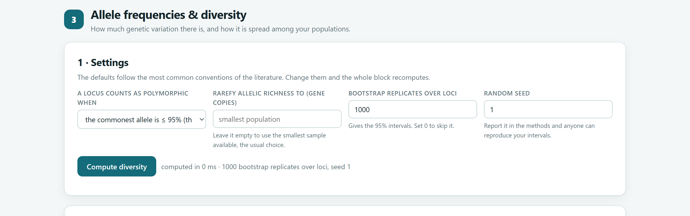
| Ajuste | Opciones | Recomendación |
|---|---|---|
| A locus counts as polymorphic when | El alelo más común ≤ 95 % (predeterminado) · ≤ 99 % · más de un alelo presente. | 95 %, el criterio más usado. Con muestras de 20 plantas o menos los tres suelen coincidir. |
| Rarefy allelic richness to | Número de copias del gen g. Vacío: la muestra más pequeña. | Déjalo vacío. Solo en codominantes y haploides. |
| Allele frequencies from dominant bands | Lynch y Milligan (predeterminado) · raíz cuadrada · bayesiano con distribución previa uniforme. | Lynch y Milligan para alógamas; bayesiano con F alto para autógamas. |
| Inbreeding F assumed by the Bayesian estimator | 0 a 1. | 0 en alógamas; 0.8 a 0.95 en especies que se autofecundan. |
| Classes per trait | 4 a 20 (predeterminado 10). | 10 clases de media desviación estándar, la convención habitual. |
| Bootstrap replicates over loci | 0 a 10 000 (predeterminado 1000). | 1000; 0 omite los intervalos. |
| Random seed | Número entero. | Repórtala en los métodos para que los intervalos sean reproducibles. |
| Tarjeta | Contenido | Se descarga |
|---|---|---|
| 2 · What the numbers say | Cifras del conjunto y párrafos de interpretación. | — |
| 3 · Diversity of every population | Tabla de índices por población con la fila del conjunto (Pooled), errores estándar sobre loci, figura de barras y curvas de rarefacción. | Summary (CSV) |
| 4 · Locus by locus | El índice elegido en Show para cada locus en cada población, y la figura Ho contra He. | — |
| 5 · Allele frequencies | Frecuencia de cada alelo en cada población, con los privados marcados; barras apiladas por locus y mapa de calor. | All frequencies (CSV) |
| 6 · Private alleles | Alelos privados con su frecuencia y alelos localmente comunes. Solo aparece si hay alguno. | — |
| Figura en la app | Qué muestra | Cuándo aparece |
|---|---|---|
| Diversity of every population | Barras del índice elegido por población, con intervalos o errores estándar y la línea del conjunto. | Dos o más poblaciones con varias muestras |
| Allelic richness against sampling effort | Curvas de rarefacción: alelos esperados según las copias del gen muestreadas. | Codominantes y haploides |
| Observed against expected heterozygosity | Cada locus en cada población; los puntos bajo la diagonal tienen déficit de heterocigotos. | Codominantes |
| Allele frequencies, locus by locus | Barras apiladas con la composición alélica de cada población. | Datos moleculares |
| Every allele in every population | Mapa de calor de todas las frecuencias; en blanco, alelo ausente en esa población. | Datos moleculares |
| Private alleles | Alelos privados por población, separando frecuentes y raros. | Si hay alelos privados |
| Phenotypic diversity by trait and population | Mapa de calor de H′ por carácter y población. | Datos morfológicos |
El ejemplo de tres poblaciones de maíz con 8 microsatélites recorre todas las tarjetas del bloque. Los valores de este capítulo son los que produce la app con los ajustes predeterminados y la semilla 1.
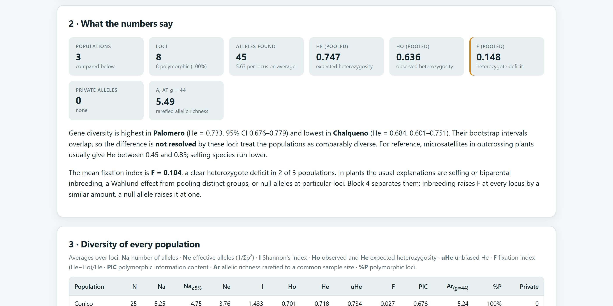
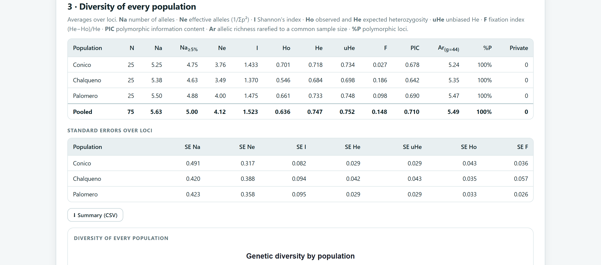
| Población | Na | Ne | I | Ho | He (IC 95 %) | uHe | F | PIC | Ar |
|---|---|---|---|---|---|---|---|---|---|
| Cónico | 5.25 | 3.76 | 1.433 | 0.701 | 0.718 (0.661–0.763) | 0.734 | 0.027 | 0.678 | 5.24 |
| Chalqueño | 5.38 | 3.49 | 1.370 | 0.546 | 0.684 (0.601–0.751) | 0.698 | 0.186 | 0.642 | 5.35 |
| Palomero | 5.50 | 4.00 | 1.475 | 0.661 | 0.733 (0.676–0.779) | 0.748 | 0.098 | 0.690 | 5.47 |
| Conjunto | 5.63 | 4.12 | 1.523 | 0.636 | 0.747 | 0.752 | 0.148 | 0.710 | 5.49 |
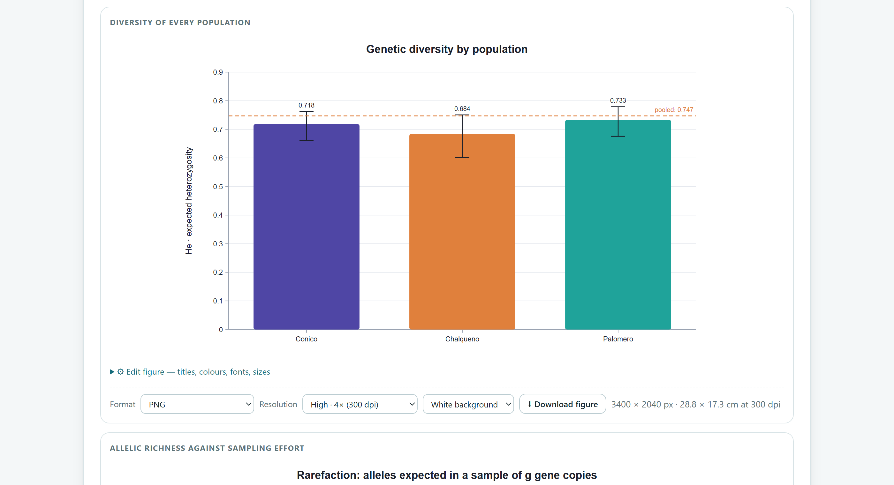
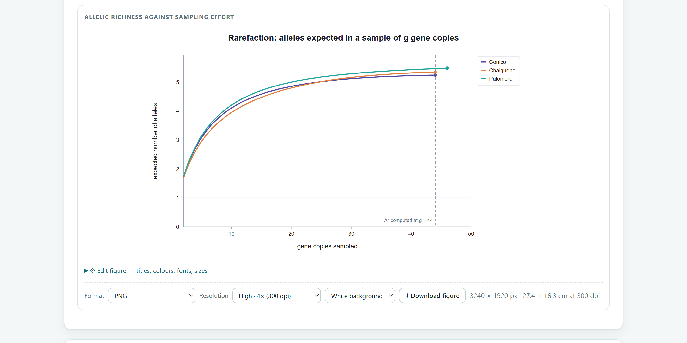
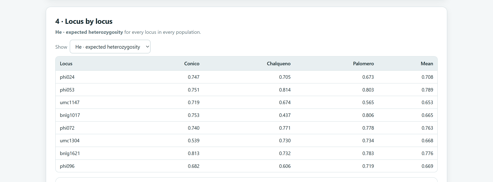
Con Show en F · fixation index se ve que en Chalqueño F va de −0.007 en bnlg1017 a 0.440 en umc1304, con 0.317 en bnlg1621, 0.305 en phi053 y 0.229 en umc1147. Esa variación, por sí sola, no decide nada: con 25 plantas, F de un locus fluctúa mucho por azar. La endogamia eleva F en la mayoría de los loci; un alelo nulo lo eleva en el mismo locus en casi todas las poblaciones. El Bloque 4 hace esa comparación con pruebas formales y, en este ejemplo, concluye que el déficit es general (capítulo 5). No saques conclusiones sobre endogamia antes de revisarlo.
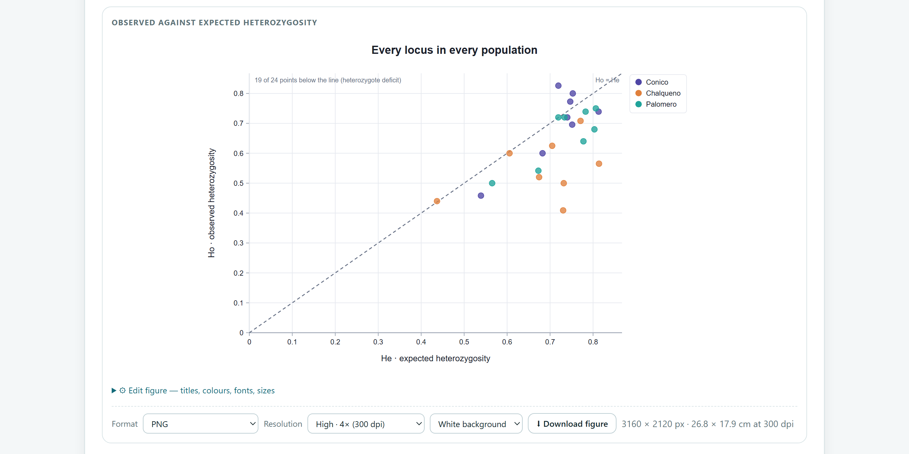
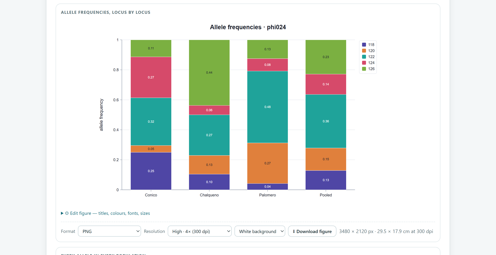
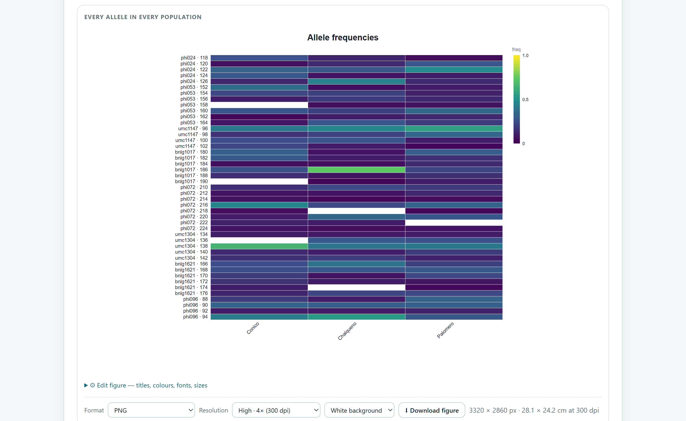
Para este manual, los índices del ejemplo se recalcularon con un programa independiente escrito a partir de los genotipos: He, Ho, uHe, Ne, I, PIC, F y Ar coinciden con la app hasta el decimal 15. La riqueza alélica se comprobó además con 40 000 submuestreos al azar, que difieren de la fórmula exacta en la cuarta cifra decimal (4.9879 y 4.9878), y el estimador de Lynch y Milligan contra su fórmula publicada.
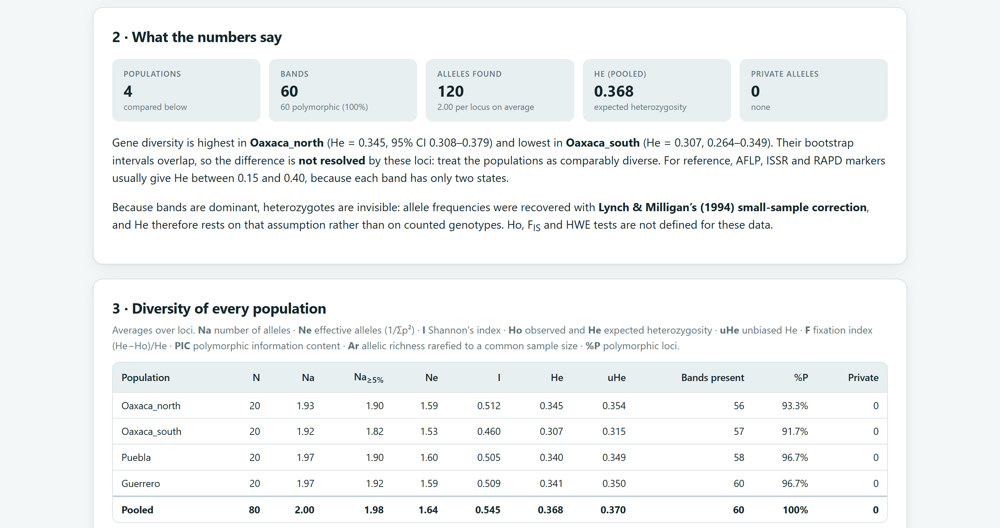
| Método | Oaxaca norte | Oaxaca sur | Puebla | Guerrero | Conjunto |
|---|---|---|---|---|---|
| Raíz cuadrada | 0.345 | 0.305 | 0.340 | 0.342 | 0.368 |
| Lynch y Milligan (predeterminado) | 0.345 | 0.307 | 0.340 | 0.341 | 0.368 |
| Bayesiano, F = 0 | 0.361 | 0.331 | 0.356 | 0.364 | 0.372 |
| Bayesiano, F = 0.9 | 0.379 | 0.329 | 0.365 | 0.389 | 0.394 |
| Si tu especie… | usa… |
|---|---|
| Es alógama y tienes 20 o más plantas por población | Lynch y Milligan. Con muestras grandes coincide con la raíz cuadrada; con pocas plantas corrige su sesgo. |
| Es alógama pero hay bandas ausentes en casi todas las plantas | Bayesiano con F = 0: no deja frecuencias en 0 o 1 cuando una banda falta en toda la muestra. |
| Se autofecunda o tiene endogamia conocida | Bayesiano con F entre 0.8 y 0.95: sin esa corrección se subestima la frecuencia del alelo recesivo. |
Sea cual sea el método, repórtalo: la He de dominantes depende de él. Las comparaciones entre poblaciones casi no cambian, como muestra la tabla 4.6.
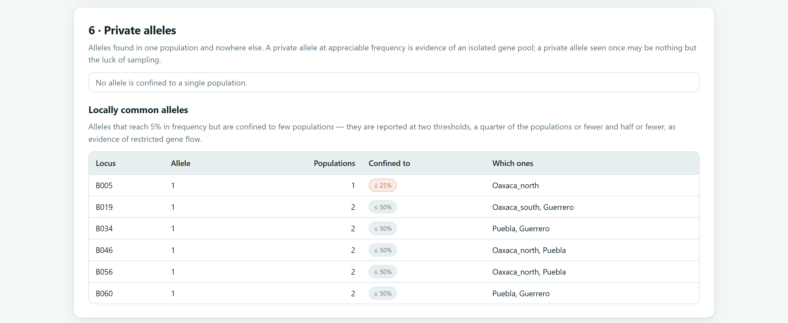
Con el ejemplo de razas de maíz cada fila es una muestra compuesta de una raza. No hay diversidad dentro de las razas que medir, así que el bloque cambia su presentación: la tabla por población muestra cuántas bandas tiene cada raza y cuáles le son exclusivas, y la interpretación se centra en el conjunto.
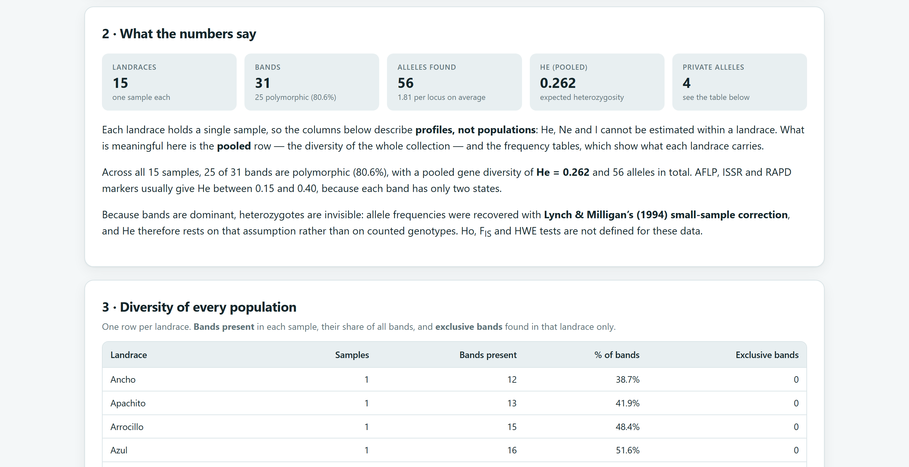
Una banda exclusiva de una raza es un buen candidato a marcador de identidad para esa raza, pero con una sola muestra compuesta no se sabe con qué frecuencia la tienen sus plantas. Para confirmarla hacen falta varias plantas por raza. Las relaciones entre las razas se estudian en el Bloque 6.
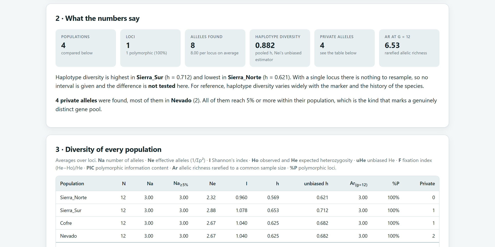
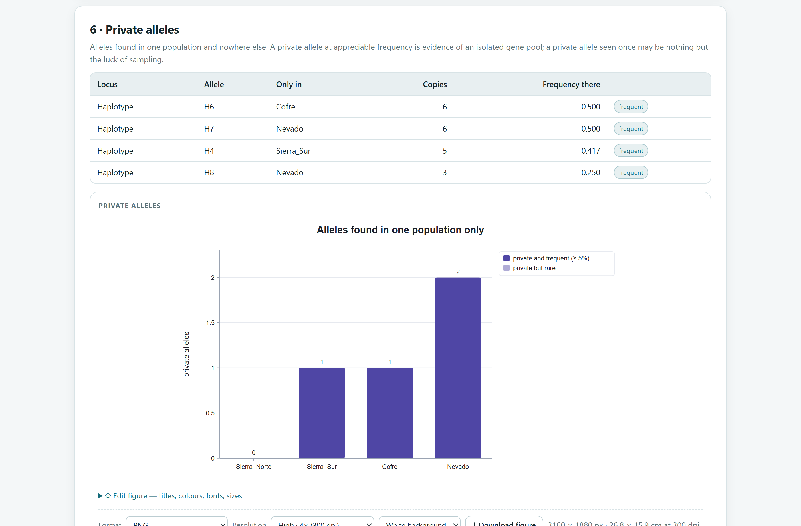
El ADN de cloroplasto se hereda por un solo progenitor. En la mayoría de las angiospermas viene de la madre y solo viaja en la semilla; en los pinos y demás coníferas viene del padre y viaja en el polen y en la semilla. Por eso, en un pino, que Nevado y Cofre conserven haplotipos propios y frecuentes indica que el flujo génico entre esas poblaciones es escaso tanto por polen como por semilla; en una angiosperma hablaría solo del movimiento de semillas. La distribución geográfica y la genealogía de los haplotipos se estudian con la red del Bloque 8.
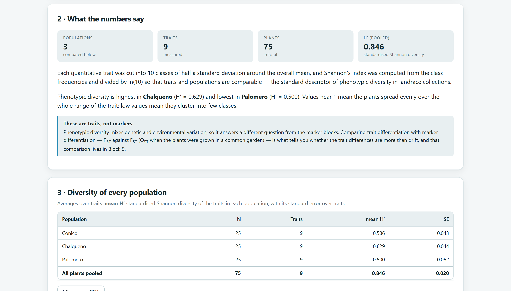
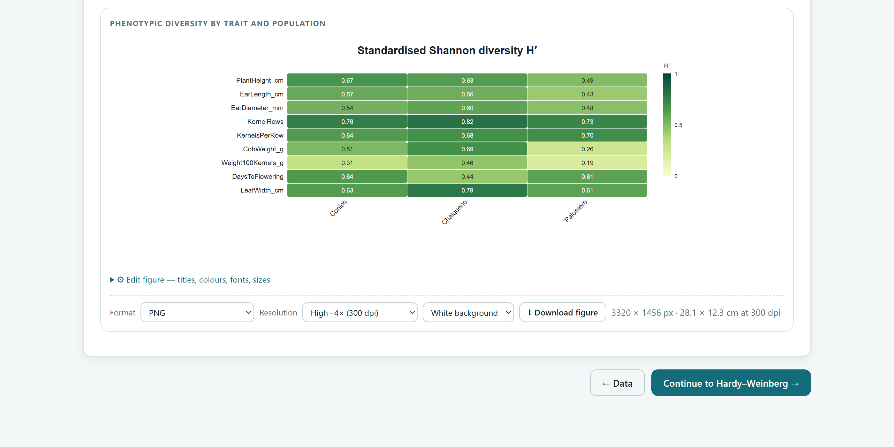
Cada carácter cuantitativo se divide en 10 clases de media desviación estándar, centradas en la media de todas las plantas; los valores más allá de 2.5 desviaciones caen en las clases extremas. En cada población se cuenta la proporción pi de plantas en cada clase, se calcula H = −Σ pi ln pi y se divide entre ln 10 para que H′ vaya de 0 (todas las plantas en una clase) a 1 (plantas repartidas por igual en las 10 clases). Los caracteres de texto usan sus propias categorías.
| H′ | Diversidad | Lectura |
|---|---|---|
| 0.6 o más | Alta | Las plantas cubren casi todo el intervalo del carácter. Material útil como fuente de variación. |
| 0.4 a 0.6 | Media | Variación moderada, frecuente dentro de una raza o variedad local. |
| Menor que 0.4 | Baja | Carácter uniforme en esa población: fijado por selección o de base genética estrecha. |
Guía orientativa usada en estudios de variedades locales. H′ mezcla variación genética y ambiental: para saber si las diferencias entre poblaciones superan lo esperado por deriva se compara PST con FST en el Bloque 9.
Una tabla de diversidad típica incluye, por población, N, Na, Ar con su g, Ho, uHe, F y el número de alelos privados, con sus errores estándar o intervalos. Descárgala con Summary (CSV): trae los índices y sus errores estándar con cuatro decimales. Con dominantes, reporta He, %P y el método de estimación de frecuencias; con haplotipos, h y el número de haplotipos; con caracteres, H′ por carácter. En los métodos indica el criterio de polimorfismo, el valor de g, el número de remuestreos y la semilla.
El siguiente capítulo toma el índice de fijación que aquí apenas se describió y lo pone a prueba: el Bloque 4 revisa el equilibrio de Hardy–Weinberg, separa la endogamia de los alelos nulos y mide el desequilibrio de ligamiento entre loci.